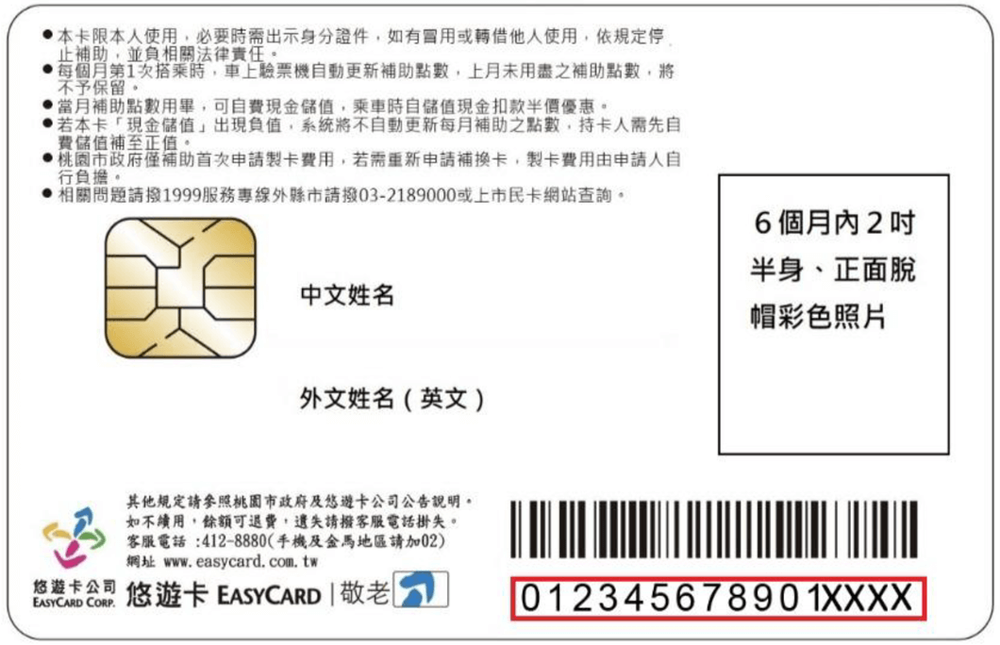
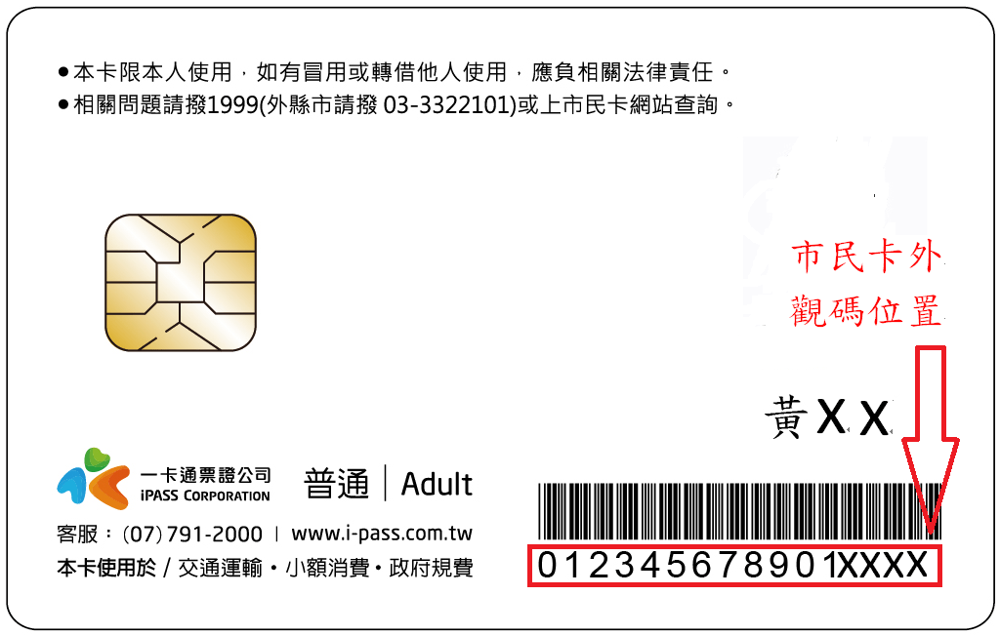
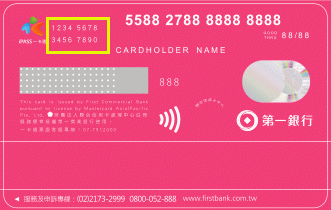
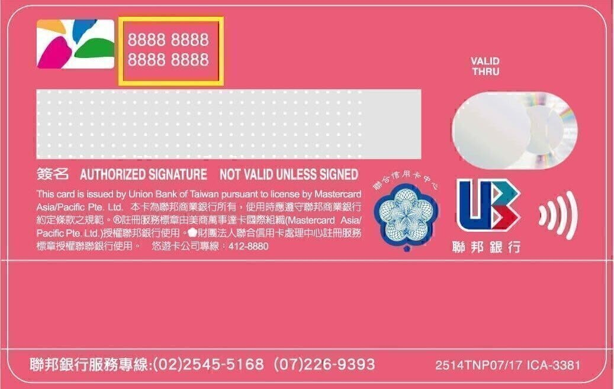

【三大支付 滿千送百】報名登記
活動期間
111年4月18日（一）至6月5日（日）23:59止，逾時恕不受理。
活動簡介
回饋名額不用抽，4/18－6/5至市民卡官方LINE註冊、登錄，即可登記滿千送百回饋名額（共計72,000名，先搶先贏）。百貨接力送好禮，6/5前至指定百貨出示市民卡官方LINE，兌換品牌折扣或來店禮，憑消費2,000元發票，再送200元百貨禮券！
活動步驟
- 於「桃園市民卡」官方LINE帳號完成「註冊/登入」動作。
- 6月5日（三）前於本頁面登記您所申辦的桃園市民卡支付工具。
※ 若您所選的支付工具名額截止，將無法成功登記。
- 6月5日（三）前使用桃園市民卡指定支付工具（悠遊卡、一卡通MONEY、第一銀行）進行消費，消費滿千元即會於七月底前獲得百元回饋金。
注意事項
- 支付業者消費限制等相關訊息，請至活動網頁查看詳情。
卡務問題請撥打客服專線：悠遊卡（02-412-880）、一卡通（07-791-2000）、第一銀行（02-2173-2999）。
- 儲存失敗或需洽詢活動事宜，請將問題及截圖寄送至客服信箱，或於平日上班時間（8:00-17:00）撥打客服專線03-3322107由專人為您服務。
如何填寫卡號？
| 悠遊卡（電子票證） |
| 認列範圍消費限制 |
僅認列一般消費（詳定義1、2）：
登記、消費、回饋，限同一張卡片 |
| 卡號位置 |

|
| 客服專線 |
02-412-8880 |
| 一卡通MONEY（電子支付） |
| 認列範圍消費限制 |
僅認列一般消費（詳定義）：
通路線上/線下交易（我的條碼/掃描） |
| 卡號位置 |

|
| 客服專線 |
07-791-2000 |
| 第一銀行（信用卡） |
| 認列範圍消費限制 |
一般消費(詳定義)及自動加值
|
| 卡號位置 |


|
| 客服專線 |
02-2173-2999 |